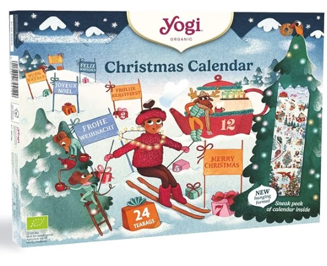
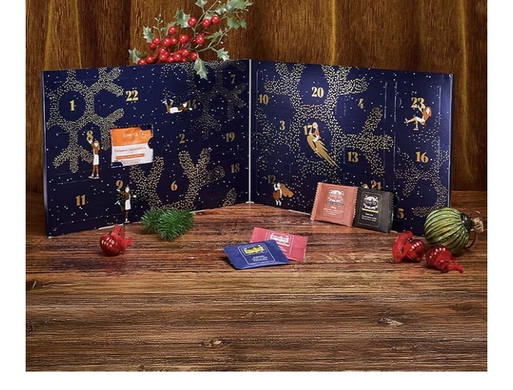
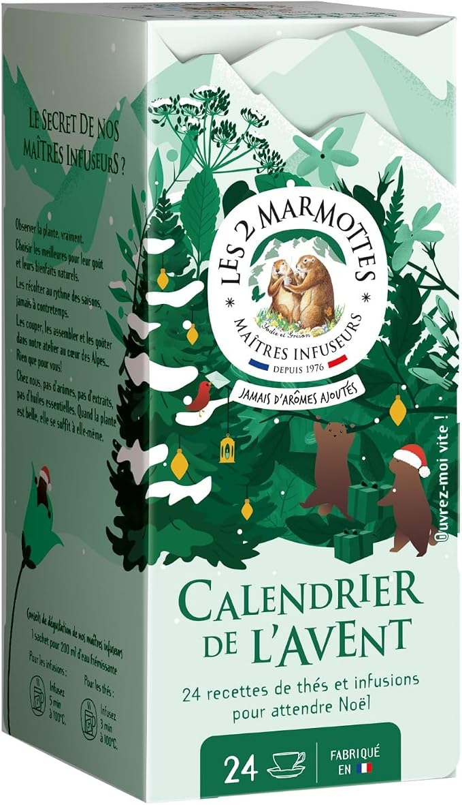
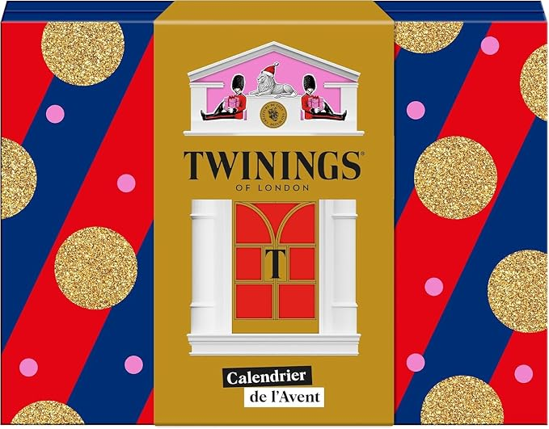

Thé & Bien-être
Yogi Tea
Un calendrier de l'Avent Yogi Tea avec 24 infusions bio.
17,99 €Voir sur Amazon ↗
En France, on adore les calendriers de l'Avent : c'est le cadeau pratique à offrir en fin d'année. 24 petites surprises, une par jour, et le compte à rebours jusqu'à Noël devient un vrai rituel.
Et pour les amateurs de thés et d'infusions, ce rituel a un parfum particulier : chaque matin de décembre, un nouveau sachet à infuser, une nouvelle saveur à découvrir. Thés noirs, thés verts, infusions bio aux plantes… Voici notre sélection des calendriers de l'Avent thé 2026.

Un calendrier de l'Avent Yogi Tea avec 24 infusions bio.


24 sachets de thés et infusions bio 100% plantes, fabriqués en Haute-Savoie, à déguster chaque jour en attendant Noël.

24 sachets de thés parfumés, infusions gourmandes et thés verts Twinings dans un écrin au décor londonien magique.
Thé noir corsé, thé vert délicat, infusions sans théine pour le soir : choisissez selon les habitudes de la personne. Les assortiments variés sont parfaits pour découvrir.
Les infusions bio aux plantes, souvent fabriquées en France, séduisent les amateurs de naturel. Vérifiez la composition si la personne est sensible à certains ingrédients.
Comptez entre 10 € et 30 € pour un bon calendrier de thé. C'est l'un des calendriers de l'Avent les plus abordables — et les plus appréciés.
Tout dépend des goûts : Yogi Tea et Les 2 Marmottes pour les infusions bien-être aux plantes, Kusmi Tea et Twinings pour les amateurs de thés parfumés. Chaque calendrier contient 24 sachets, un par jour jusqu'à Noël.
Les thés (noir, vert) contiennent de la théine, tandis que les infusions aux plantes et aux fruits n'en contiennent pas. Les calendriers mixtes alternent les deux : parfait pour le matin et le soir.
Les calendriers de thé sont disponibles sur Amazon, souvent avec des promotions en novembre. Les prix affichés sur cette page sont indicatifs et peuvent varier.